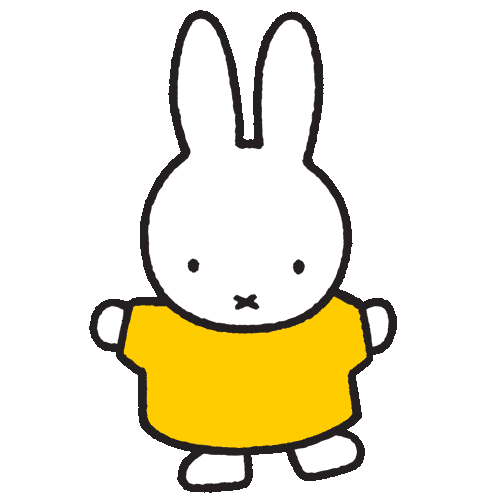
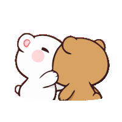
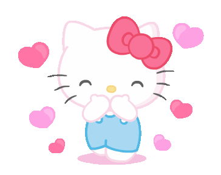

⣠⡶⢶⣦⠀⠀⠀⣠⡶⢶⣄⠀⠀⠀⠀⠀⠀⠀⠀⠀⠀⠀⠀⠀⠀⠀⠀⠀
⠀⢰⡟⠀⠀⢹⣧⠀⣸⠏⠀⠀⢻⡆⠀⠀⠀⠀⠀⠀⠀⠀⠀⠀⠀⠀⠀⠀⠀⠀
⠀⣿⠁⠀⠀⠀⢿⣴⡿⠀⠀⠀⢸⡇⠀⠀⠀⠀⠀⠀⠀⠀⠀⠀⠀⠀⠀⠀⠀⠀
⠀⣿⠀⠀⠀⠀⢸⣿⠇⠀⠀⠀⢸⡇⠀⠀⠀⠀⠀⠀⠀⠀⠀⠀⠀⠀⠀⠀⠀⠀
⠀⢿⡆⠀⠀⠀⠈⣿⠀⠀⠀⠀⣸⡇⠀⠀⠀⠀⠀⠀⠀⠀⣀⣀⡀⠀⠀⠀⠀⠀
⠀⢸⣷⠀⠀⠀⠀⠀⠀⠀⠀⢰⣟⠀⠀⠀⣀⣀⣀⣀⣀⣾⠋⠉⠹⣇⠀⠀⠀⠀
⠀⣰⡿⠀⠀⠀⠀⠀⠀⠀⠀⠀⠹⣧⣶⠞⠋⠉⠀⠈⠉⠃⠀⠀⢠⡟⠀⠀⠀⠀
⢠⡿⠀⠀⠀⠀⠀⠀⠀⠀⠀⠀⠀⢹⡇⠀⠀⠀⠀⠀⠀⠀⠀⠀⠈⠻⣦⡀⠀⠀
⣸⡇⠀⠀⠀⠀⠀⠀⠀⠀⠀⠀⠀⢘⣷⠀⠀⠀⠀⠀⠀⠀⠀⠀⠀⠀⠘⢷⣄⠀
⢿⡇⠸⣿⠀⠀⠀⠀⠀⠀⣴⣆⠀⢸⡏⠀⠀⠀⠀⠀⠀⠀⠀⠀⠀⠀⠀⠀⢻⡆
⠸⣧⡀⠀⠀⢀⣶⣶⡆⠀⠈⠁⣰⡟⠁⠀⠀⠀⠀⠀⠀⠀⢀⣀⠀⠀⠀⠀⣸⡇
⠀⠙⠻⣦⣄⣀⣀⣈⣁⣀⣤⠾⠋⠀⠀⠀⠀⠀⣀⣠⣴⡶⢿⡿⠿⠶⣶⠶⠟⠀
⠀⠀⢠⡟⠉⢙⣿⠛⠋⠉⠁⠀⠀⣀⣠⣴⠶⠟⠛⠉⠀⠀⠀⠀⠀⠀⠀⠀⠀⠀
⠀⠀⠘⢿⣤⣘⣿⡀⠀⠀⢀⣴⡿⠋⠉⠀⠀⠀⠀⠀⠀⠀⠀⠀⠀⠀⠀⠀⠀⠀
⠀⠀⠀⠀⠈⠉⠙⠛⠻⠿⠛⠉⠀⠀⠀⠀⠀⠀⠀⠀⠀⠀⠀⠀⠀⠀⠀⠀⠀⠀


This is your future and forever loving nerdy bf/huband, Sean :)
To be honest, I dont even know where to fully began because somehow in such little time, you went from being such a great person in my life to becoming the most important part of it.
Even with the distance between the two of us, you've made things feel close in ways I never expected. I love how honest we both are with each other. The fact that we can still talk about anything, reassure each other more and more, and be patient with one another means so much more than you probably realize.
Every text, every movie night, every “I miss you more” argument that neither of us will ever let the other win. Every late night call where we talk until we forget the time and fall asleep. Nothing about us ever felt forced to me.
I know I may not be the first person to make you laugh, or the first person to stay up late talking about life issues, and we may not be each others first love either. But honestly, I could care less about being the first, because id rather be the last, the one who stays.
I want to be the person who never falls out of love because of a small fight, a misunderstanding, or because things get hard. Whether its dry moments or miscommunication, I want to be the person who still chooses you because I want to involve my life with you, especially during the quiet, messy, and difficult days.
Before you, life honestly felt a little stale. It was like being stuck in a black and white movie on repeat. But the more we talked, and the more we opened our hearts to each other, the more colorful everthing felt. You brought colors into areas of my life that I didnt realized needed them
It felt easier to breathe the air, like i wasnt having a panic attack every 3 hrs. Even seeing one of ur pictures somehow makes my entire day feel lighter. And i genuinely can't explain that, but that I know it's your presence.
Thats actually why you remind me of a flamingo.
Remember when we asked each other what animal reminded us of each other?
It probably sounds random at first, but flamingos stand out in the most beautiful ways. Their colors are soft but vibrant, and no matter their environment, they naturally catch your attention, and they do it just by being exactly who they are. Thats when I knew one thing: Loving you felt natural.
I also want you to know how much I admire how hard you try. You mentioned once that you can be avoidant sometimes, but even then, you still show up. not just for me, for each other, but most importantly, for you. Even when you dont know the perfect thing to say, send a dry text, or even when you feel overwhelmed, you still find a way to make things work. Thats not small. Thats one of the purest and rarest values a beautiful women such as yourself holds Maegan.
Im forever proud of your efforts, not just your results.
And I hope you know, Im not saying all of this just to sound sweet or to make some perfect love letter. but because my heart knows the right things to say when it involves you. Every word comes from the real me, the me that wants to cherish you with love and appreciation, and celebrate all of your moments, big and small.
I can't wait to listen to Bruno Mars with you on a random weekday for no reason.
I cant wait to argue over who gets the last Xtra Flamin Hot Cheeto during movie night.
I can't wait to be in each others 7 minutes.
I can't wait to have pink drink dates with you just because.
I can't wait for your coconut mango shampoo to be the first thing I notice when I hug you.
I can't wait for the distance between us to shorten.
but I mostly can't wait to be someone you and your family is proud to know.
No matter what kind of random bullshit we might encounter, I want to go through it with only you. Because theres nothing I want more than to spend every moment with my future girlfriend, my future wife, and the one who makes my world feel right.
You've always been willing to wait, and you told me that, especially if its with the right one. I just want you to know: I always feel the same way. I'm not going anywhere.
I dont want to rush us into something before life gives us the right moment. I dont need a title tomorrow to know what you mean to me today. What matters most to me is continuing to grow with you, learn with you, and continuing to choose each other the same way we always have been.
one day, when the distance is shorter, when timing is kinder to us, I will ask you that question for real.
But as of now, I just hope you never forget how deeply loved, appreciated, and cherished you are to me. and that we soon will be together that God planned us to.
Your future, (and still winning the “I miss you more” and “I love you more” argument)
